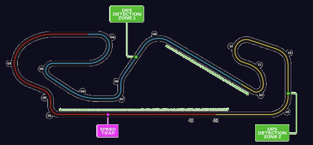

PITWALL
A lap-wise problem
Each lap, the pit wall weighs tyre pace against pit loss, traffic and the laps left to race.

123456789One circuit, many calls
Tyre wear changes through a stint; a stop exchanges track position now for fresh-tyre pace later.
The decision
Pit now—or stay out? A call trades tyre pace against pit-lane time and track position. A fast stop can lose places; an old tyre can bleed seconds. Safety cars, traffic and uncertain wear make the choice harder.
Tyres & race context
At the 2023 Spanish GP, Pirelli allocated C1 Hard, C2 Medium and C3 Soft (white, yellow, red). Different compounds trade life against pace.
Suggested pit windows: laps 13–18 and 37–43. Pre-race guidance—not the result of our agent. [4]
Share of race laps completed on each dry compound; rounded, so totals may differ from 100%. [4]
Evaluation snapshot
D2 report split · Qwen3-30B-A3B via ASU RC Voyager. Agent simulator 65 laps; official GP 66 laps. Invalid submissions are excluded from regret. [1, 2]
How PITWALL works
At each sampled race snapshot, a language model uses strategy tools to produce one structured action: PIT with a legal tyre or STAY OUT and reassess.
race state
uncertainty
candidate plans
PIT / STAY
No peeking at the future
To test a real-time decision, separate what the agent may know from what the evaluator uses to score it.
+ practice prior
hidden
for scoring
extra simulated seconds
Each policy’s action is expanded into a legal continuation, then both policy and optimizer plans are scored in the same simulator world. The benchmark is model-dependent, not an achievable race result. [2]
One real agent call
hindsight reference
The agent planned to run the current Soft tyre longer, then switch to Medium; its row reports the first pit on lap 42 (the tool encodes the first stint as 27 laps). The hindsight plan chose Hard for the final stint and pits on lap 35. Both were evaluated in the same simulated scenario.
This is one valid historical example. It does not mean the race team received this advice, or that the simulator predicts the actual race outcome.
This is one historical evaluation example—not the actual strategy call made by the team in the 2023 race.
Agent result · matched scenarios
On the same 9 snapshots where PITWALL returned a valid decision, mean regret versus the hindsight reference was:
Invalid submissions returned no scored plan, so they are excluded from the regret mean. Report coverage alongside quality: 4.29 s is not a full-set score or real-race performance.
Baseline report set · D3
50 snapshots: 25 each from 2019 Monaco and 2023 Spain. These are baseline results—not LLM-agent scores. The Spain sample overlaps with D2. [2]
Mean simulated-time regret vs. empirical hindsight optimizer · lower is better. Recorded actual stints: 48/50 scored; 2 unavailable. [2]
What to take away
The aim is a transparent strategy assistant—not autonomous control of a real race car.